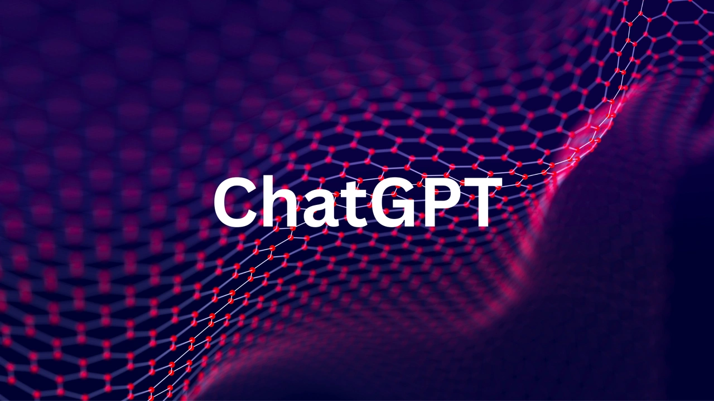
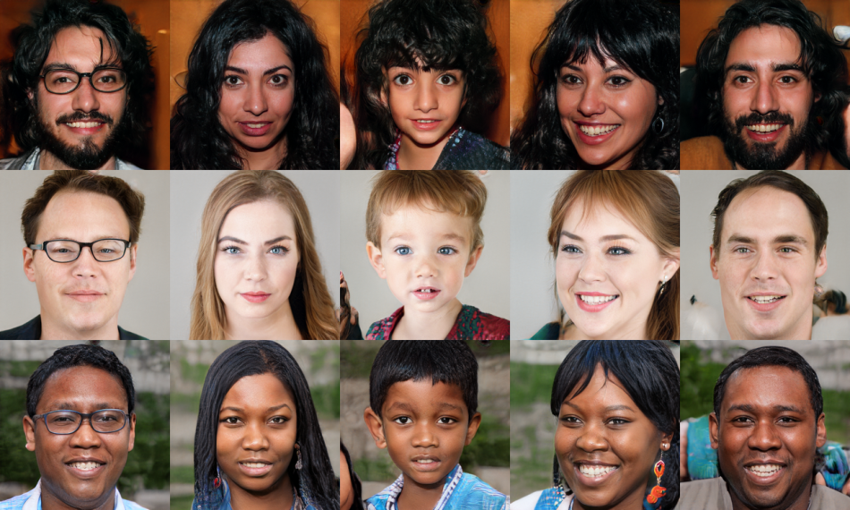
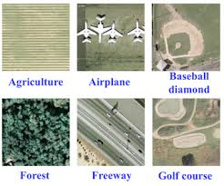

About Me

I'm Akshat Kumar, a third-year mechanical Engineering and pursuing minor in Data
Sciencee
at IIT Bombay . I secured a 99.34 percentile in JEE Mains and
ranked among the top 5% in JEE Advanced. I also secured 95.6% in
class
12 boards. I’m also a passionate full-stack developer and I love building sites.
I'm deeply interested in Machine Learnign particularly Large Language Models, Generative Models
such
as GAN's, and Speech Recognition, and I enjoy exploring and learning about these areas. I also
actively take part in ML related hackathons.
I am a passionate learner with a keen interest in exploring new technologies. I enjoy
programming
and continuously seek to expand my knowledge.I have worked on projects requiring proficiency in
C,
C++, Python, JavaScript, and several other programming languages.

My Education
Indian Institute of Technology Bombay, Mumbai
Dual Degree (Btech + Mtech): Mechanical Engineering 2022 -2027 Pursuing a Minor in Data Science from CminDS, IITB

Ryan International School, Vasant Kunj
Completed Senior Secondary Education (12th)
Grade: 95.6%
Ryan International School, Vasant Kunj
High School Education (10th)
Grade: 91.2%
Skills
Key Projects
Team SeDriCa: Self-Driving Car Project
Overview: Collaborating with a team of 30+ students to develop India's first Level 5 Self-Driving Car, customized for Indian roads using advanced Computer Vision, Localization, and Motion Planning concepts.
- Researched and implemented robust solutions for the Simultaneous Localization and Mapping (SLAM) problem using LiDAR sensors.
- Designed an Extended Kalman Filter Package to fuse GPS and IMU data, achieving a highly accurate state vector.
- Optimized a variant of the Iterative Closest Point (ICP) algorithm to generate real-time location estimates.
- Implemented a ground segmentation algorithm using RANSAC (Random Sample Consensus) for point cloud data.
Self-Driving Car
Team UMIC, IIT Bombay
Making ChatGPT
Crafting OpenAI's GPT 2 from scratch
Developed a simplified implementation of GPT-2 from scratch, incorporating techniques such as WaveNet-inspired architectures and custom tokenization methods.
Generating Human Like Faces
Face Image Generation using DC-GAN and VAE
Implementing a model that uses a deep convolutional generative adversarial network (DC-GAN)
and
a variational autoencoder (VAE) to generate realistic fake human face from random noise.
Stock Market Prediction

Web Application for Stock Market Prediction using LSTM
Developed an end-to-end web application for stock price prediction using an LSTM model. Trained on historical stock prices to accurately forecast future stock values.
Stock Selection Model
Deep Reinforcement Leaning for Stock Trading
Utilized Deep Q-Network (DQN) algorithm to train an Reinforcement Learning agent for stock
selection and portfolio management in NIFTY50 and Dow Jones Industrial Average (DJIA)
Developed a sophisticated reward function designed to optimize investment returns within the
stock
trading framework. It meticulously balances higher returns with prudent risk management
strategies.
Identification of Satellite Image
Satellite Image Classification using SDH and GLCM
Implemented image classification models leveraging SDH (Sum-Difference Histogram) based
texture
features and GLCM (Gray-Level Co-occurrence Matrices) texture features for accurate
classification
Trained three models, Random Forest Classifier, deep Neural Network, and XGB Boost
Classifier
on the Imagerar dataset containing 10,000+ images, achieving 78% best accuracy.
Predicting Price Of Used Cars
Price Prediction Model For Used Cars
Built multiple machine learning models to predict price of used second hand cars based on
distance
travelled, mileage, weight, No. of years used, engine and other such parameters of used cars
Trained different Machine Learning models like Random Forest, Lasso and Linear regression
and
found that Random Forest performed the best with an R2 score 0.87 and MAE 2.58